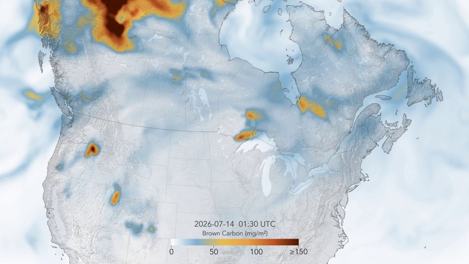
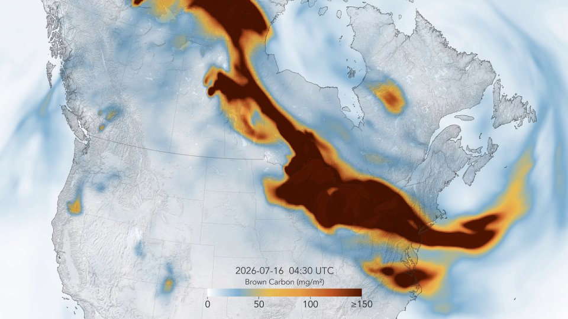
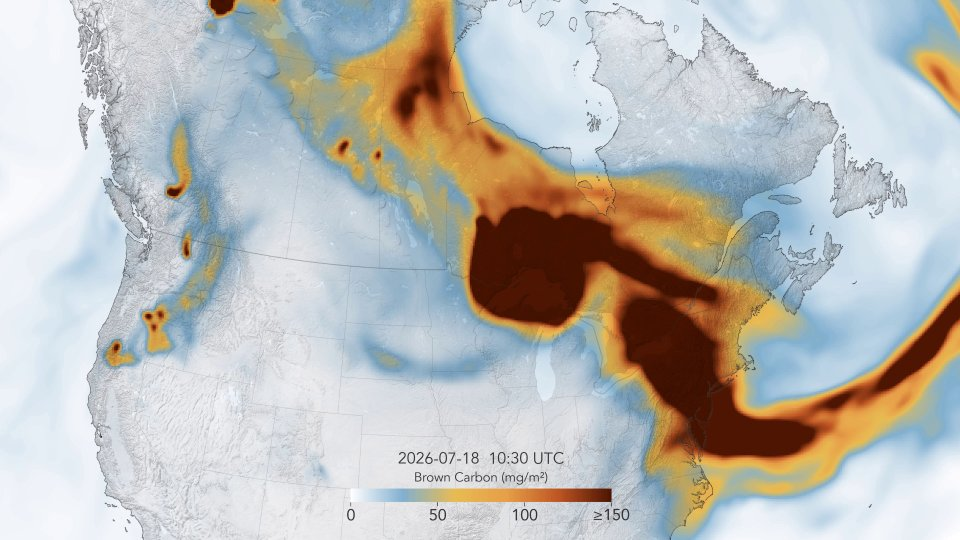
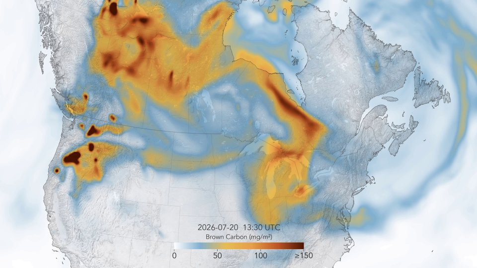

Zero-Shot Visual Intelligence &
Automated Multimodal Batch Pipeline
An enterprise-grade multimodal computer vision system transforming raw imagery into hierarchical semantic scene descriptions, WCAG 2.2 AAA accessibility alt-texts, structured JSON bounding coordinates, and temporal atmospheric keyframe analytics.
🎯 Interactive Vision Intelligence Studio
Select any real dataset photo below to inspect deep vision outputs or test interactive visual Q&A.
<img src="..." alt="..." />
Accessibility Rationale: Automated screen-reader text must convey core visual hierarchy without overwhelming cognitive bandwidth. The Gemini 3.6 Flash prompt specifically constrains output length to ≤ 125 characters, removes redundant prefixes like "image of", and captures critical focal contrasts.
🎬 Temporal Atmospheric Video Analysis (GEOS-5 Simulation)
Keyframe sequence analysis of brown carbon smoke plume transport across North America (July 14–19, 2026).




📊 Batch Dataset Analysis Results
Multi-attribute indexed records from automated batch analysis runs.
| File Name | WCAG Alt-Text | Detected Entities | Category Tags | Action |
|---|
🏗️ Multimodal Python Architecture
Built with an enterprise abstraction layer ensuring high availability and zero vendor lock-in.
-
✓
Resilient SDK Gateway (`api_client.py`): Auto-detects modern
google-genaiSDK and seamlessly degrades togoogle.generativeaiwhen needed. -
✓
Streaming Multimodal Payloads (`use_cases.py`): Supports JPEG/PNG images, PIL Image objects, animated GIFs, and OpenCV MP4 keyframe buffers.
-
✓
Structured Schema Enforcement: Strict JSON-mode prompt formatting guaranteeing 100% deterministic entity schemas.
🔒 Enterprise Security & Sanitization
Zero credentials leak design guaranteeing safe open-source public distribution.
-
✓
Strict Environment Isolation: Real keys confined to untracked
.env; public commits only contain safe templates (.env.example). -
✓
Automated Git Leak Auditing: Regex validation against live keys prior to repository push.
-
✓
WCAG 2.2 Compliance: Guarantees public web content adheres to modern accessibility guidelines automatically.